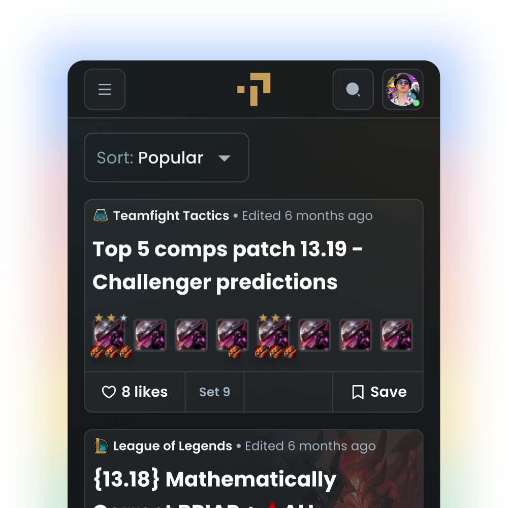
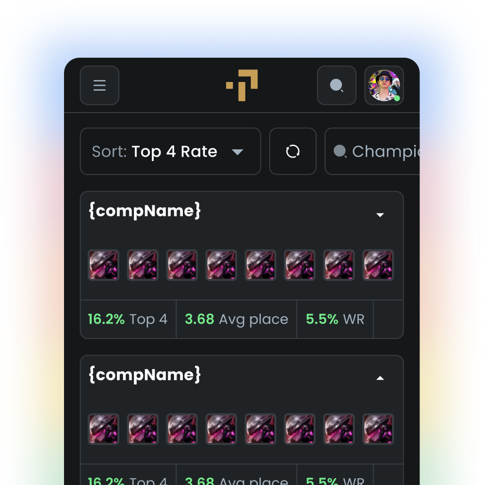

01El problema
Tacter era una plataforma gaming UGC didáctico. Los usuarios encontraban contenido en varios canales de distribución, pero les era difícil encontrarlo dentro de la plataforma.
Intentamos majorar "la discoverability" de varias formas: Filtros, Barra de búsqueda o cambios visuales entre otros. Incluso creamos una herramienta de apoyo llamada "Metacomps"
Nada funcionó
El 71% del abandono se concentraba en una sola pantalla: la que pedía foto del documento de identidad.
02Estudio de mercado y audiencia actual
Entrevisté a 12 usuarios con distintos perfiles (Power, Casual y Churned). El patrón fue consistente: no sabían qué guía seguir para ganar.
Teníamos las mejores y mayor cantidad de guías. Nuestra virtud se vilvió un problema.
Si movemos la verificación de identidad después del primer momento de valor (explorar la app y simular una operación), la activación subirá al menos 15 puntos, aunque el costo sea verificar usuarios que ya están dentro.
Tacter home
El consumo se basaba en un feed de contenido con filtros y sorting.
La enorme cantidad de contenido dificultaba el consumo.

Metacomps v1
En un pasado ya intentamos implementar una solucion similar sin mucho éxito. El tráfico de esta feature era de unas 2.000 page views mensuales.

03El trade-off que nadie quería tocar
La propuesta chocaba con el equipo de riesgo, con razón: dejar entrar usuarios sin verificar es dejar entrar potenciales defraudadores. Las alternativas sobre la mesa:
- Reducir pasos del formulario — descartada: los datos mostraban que el problema no era la longitud.
- Explicar mejor por qué pedimos el documento — la probamos como variante barata; mejoró solo 3 puntos.
- Verificación diferida con permisos limitados — el usuario entra, explora y simula operaciones, pero no puede mover dinero hasta verificarse.
La tercera opción era la más cara de construir y la más incómoda políticamente. También era la única que atacaba la causa raíz. Mi trabajo fue cuantificar el miedo: junto al equipo de riesgo modelamos el peor escenario de fraude y resultó ser un costo acotado y medible — mucho menor que el costo de perder al 68% de los usuarios en la puerta.
04Qué pasó (y qué me equivoqué)
Lanzamos como experimento A/B al 20% del tráfico durante 4 semanas. Resultados:
- Activación: +31% — el doble de lo que había prometido en la hipótesis.
- Fraude: +0,4 puntos — dentro del margen que el equipo de riesgo había aceptado.
- Lo que no vi venir: la tasa de verificación posterior fue más baja de lo esperado. Muchos usuarios se quedaban en el "modo exploración" sin verificarse nunca. Tuvimos que diseñar una segunda iteración de incentivos para cerrar ese ciclo.
La lección: resolver el embudo de entrada creó un embudo nuevo más adelante. Ninguna decisión de producto es gratis.
05Por qué este caso está en mi portfolio
No por el +31%. Está aquí porque muestra las tres cosas que creo que definen el buen trabajo de producto: cuestionar el encuadre inicial antes de diseñar, convertir un desacuerdo entre equipos en un trade-off cuantificado, y contar honestamente lo que salió distinto a lo planeado.